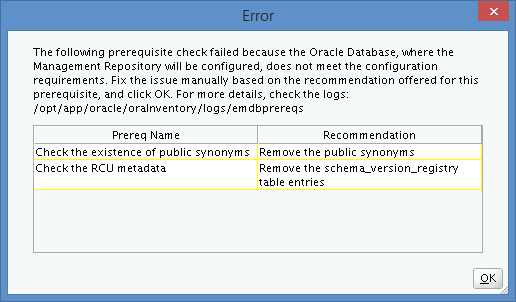
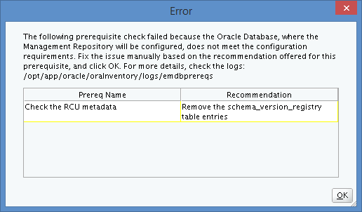
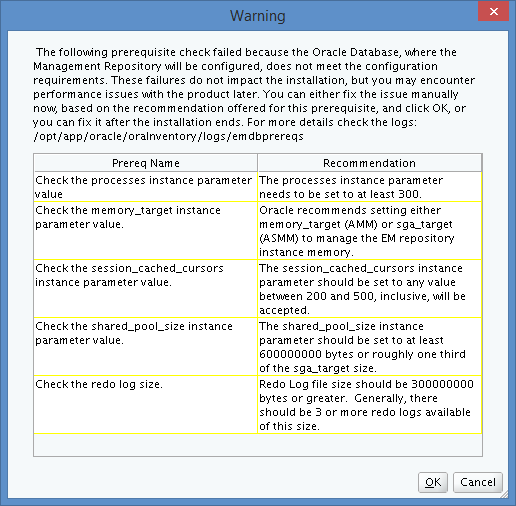
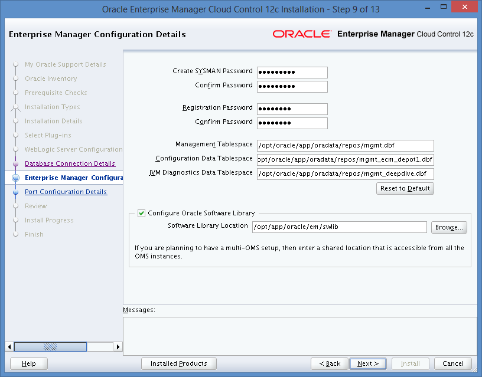
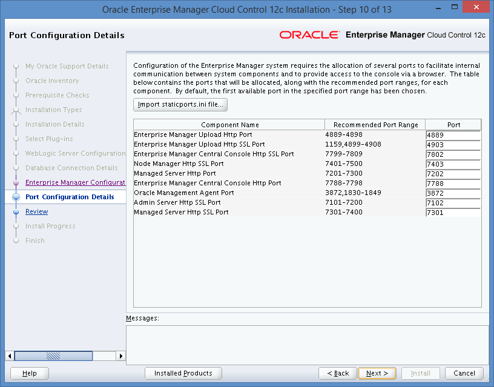
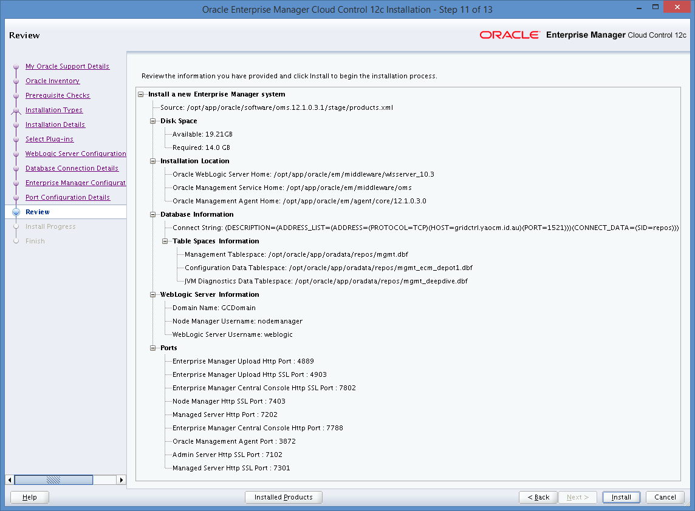
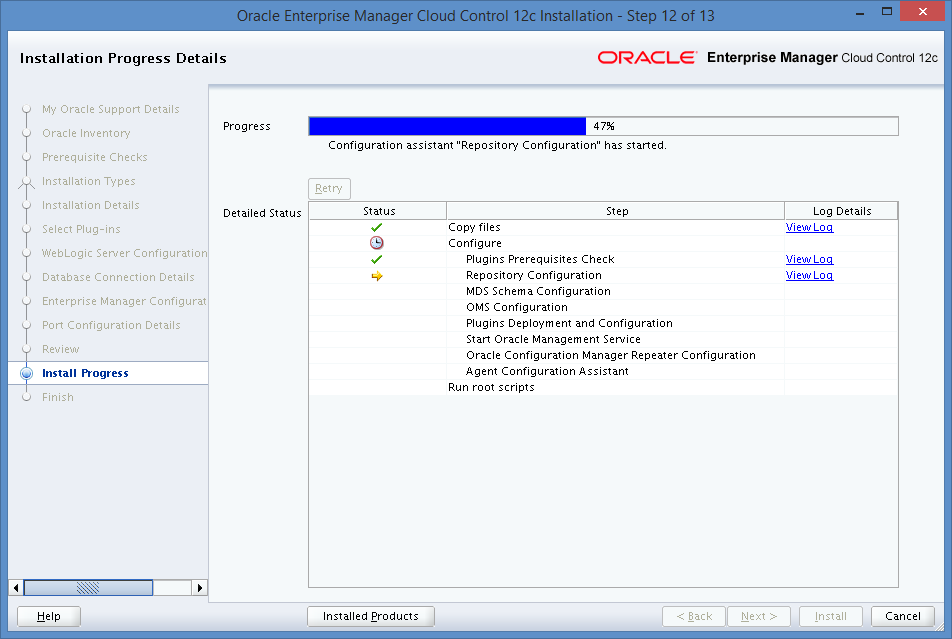
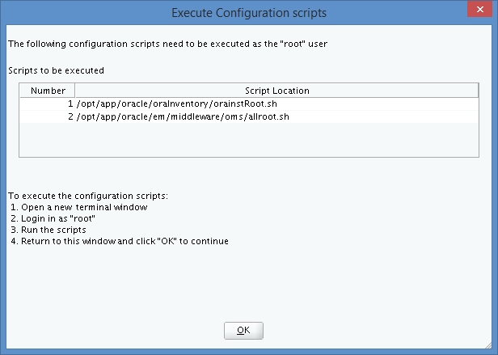
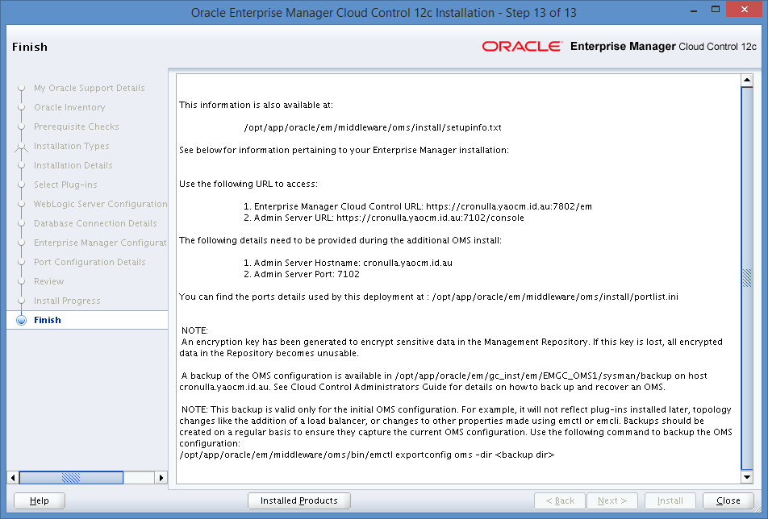

OverviewThe installation failed with the following error message: The database details which you have provided doesn't contain valid Management Repository. Provide correct database details and retry. References
DiagnosisReview MOSMOS Doc ID 1568727.1 was found. Review LogsThe log at /opt/app/oracle/oraInventory/logs/installActions2014-03-08_07-47-03PM.log shows the following enties:
This matches the symptoms described in MOS Doc ID 1568727.1 . ProcedureRecommended SolutionMOS Doc ID 1568727.1 recommends to download correct the template from Database Template (with EM 12.1.0.3 repository pre-configured) for Installing Oracle Enterprise Manager Cloud Control 12c Release 3 (12.1.0.3) . Drop SYSMAN Schemae in REPOSInstead, I decided to drop all of the OEM schemae from REPOS as follows: DROP USER SYSMAN CASCADE; DROP USER SYSMAN_OPSS CASCADE; DROP USER SYSMAN_MDS CASCADE; DROP USER SYSMAN_APM CASCADE; DROP USER SYSMAN_RO CASCADE; Attempt Step 8 AgainAfter I had removed the OEM schemae from REPOS , I clicked Next to go to the next screen, but I got the following error message instead: Review the LogsI found the following errors in /opt/app/oracle/oraInventory/logs/emdbprereqs/2014-03-09-06-38-51/repository.log : Executing Prereq Action Clean UpBased on the SQL statements listed in the failure messages above, I created several fix up scripts. Remove SynonymsIn order to remove the old synonyms, I used the following SQL script in REPOS :
Remove Remaining Objects and DataTo remove the remaining objects and data, I used the following SQL script in REPOS : DROP USER mgmt_view CASCADE; DROP TABLESPACE mgmt_ecm_depot_ts INCLUDING CONTENTS AND DATAFILES CASCADE CONSTRAINTS; DROP TABLESPACE mgmt_tablespace INCLUDING CONTENTS AND DATAFILES CASCADE CONSTRAINTS; DROP TABLESPACE mgmt_ad4j_ts INCLUDING CONTENTS AND DATAFILES CASCADE CONSTRAINTS; Clean up RegistryMOS Doc ID 1365834.1 seems to apply here because I did do the following: The repository was cleaned-up using "drop user" command instead of "RepManager dropall" . Due to this, the resulting repository record for the sysman_mds, sysman_opss, sysman_apm schemas are not cleaned-up. Following the solution provided, I ran the following command:
DBA Auto JobsSearching MOS, I found EM 12c: OUI hangs / freezes after providing repository database details while Upgrading to 12.1.0.2 (Doc ID 1525857.1) which indicates a potential problem only as far as performance goes. Running the following query from SQL*Plus took 24.61 seconds:
I consider MOS Doc ID 1525857.1 not to apply in my case. Step 8: Continue InstallationI clicked OK on the error message display. Then I clicked Next at Step #8 again, and I got the following error message: 
I forgot to a
Clicked Yes to automatically fix the problem. Then I clicked Next at Step #8 again, and I got the following warning message: Correct Database ParametersUpdated the following parameters in the REPOS database: control_files = "/opt/oracle/app/oradata/repos/control01.ctl" control_files = "/opt/oracle/app/fast_recovery_area/repos/control02.ctl" db_block_size = 8192 compatible = "11.2.0.4.0" log_archive_format = "%t_%s_%r.dbf" db_recovery_file_dest = "/opt/oracle/app/fast_recovery_area" db_recovery_file_dest_size= 20G undo_tablespace = "UNDOTBS1" remote_login_passwordfile= "EXCLUSIVE" db_domain = "yaocm.id.au" dispatchers = "(PROTOCOL=TCP) (SERVICE=reposXDB)" job_queue_processes = 1000 audit_file_dest = "/opt/oracle/app/admin/repos/adump" audit_trail = "DB" db_name = "repos" open_cursors = 300 sec_return_server_release_banner= TRUE diagnostic_dest = "/opt/oracle/app" processes =300#EM12C Small Installation session_cached_cursors =300#EM12C Small Installation sga_max_size =2G#EM12C Small Installation sga_target =2G#EM12C Small Installation shared_pool_size =600M#EM12C Small Installation pga_aggregate_target =400M#EM12C Small Installation db_cache_size =800M#EM12C Small Installation I also increase the size of the online redo log file to 1G each and removed the small ones as follows: ALTER DATABASE ADD LOGFILE GROUP 4 '/opt/oracle/app/oradata/repos/redo04.log' SIZE 1G; ALTER DATABASE ADD LOGFILE GROUP 5 '/opt/oracle/app/oradata/repos/redo05.log' SIZE 1G; ALTER DATABASE ADD LOGFILE GROUP 6 '/opt/oracle/app/oradata/repos/redo06.log' SIZE 1G; ALTER SYSTEM SWITCH LOGFILE; ALTER DATABASE DROP LOGFILE GROUP 1; ALTER DATABASE DROP LOGFILE GROUP 2; ALTER DATABASE DROP LOGFILE GROUP 3; Note: I left the OMS installation process running while I reconfigured the database through a restart. I clicked OK on the error message display. Step 9: Enterprise Manager Configuration DetailsI filled in the details as follows: I clicked Next to go to the next screen. Step 10: Post Configuration DetailsI left the details as follows: I clicked Next to go to the next screen. Step 11: ReviewI reviewed the details as follows: I clicked Install to go to the next screen. Step 12: Install ProgressThe following screen shot was captured during the installation: Eventually, the following screen appeared: Ran the scripts with the following results:
I clicked OK to go to the next screen. Step 13: FinishAt completion, the following screen appeared: I clicked Close to complete the installation.
|